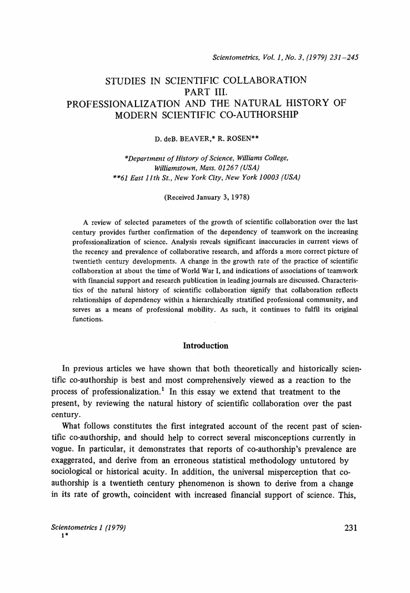
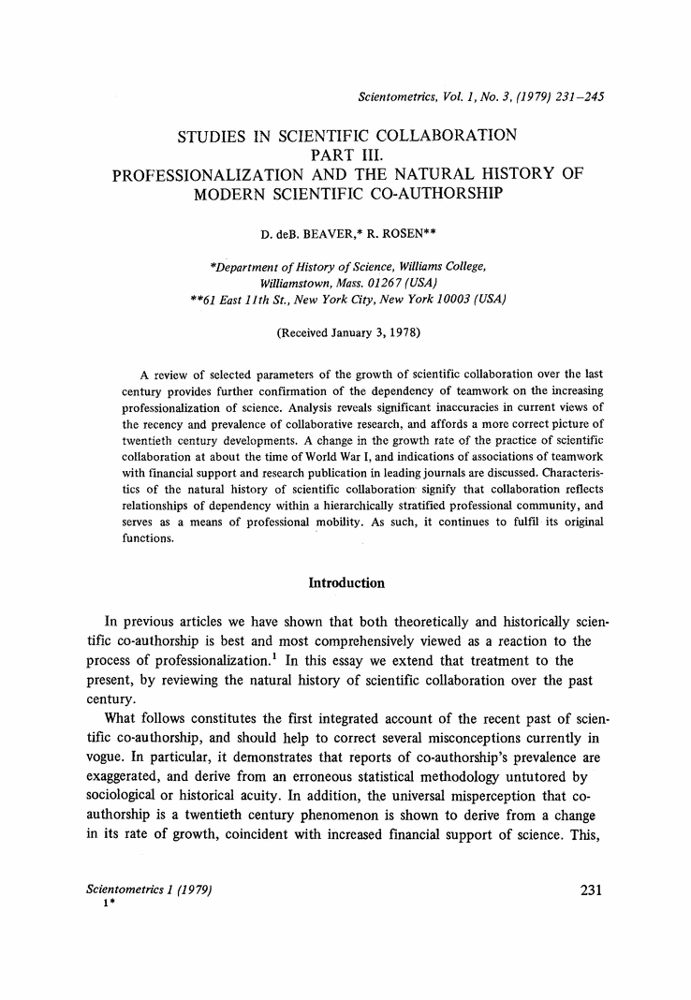

Studies in scientific collaboration Part III. Professionalization and the natural history of modern scientific co-authorship
- D. deB Beaver,
- R. Rosen
- … show all 2 hide
Abstract
A review of selected parameters of the growth of scientific collaboration over the last century provides further confirmation of the dependency of teamwork on the increasing professionalization of science. Analysis reveals significant inaccuracies in current views of the recency and prevalence of collaborative research, and affords a more correct picture of twentieth century developments. A change in the growth rate of the practice of scientific collaboration at about the time of World War I, and indications of associations of teamwork with financial support and research publication in leading journals are discussed. Characteristics of the natural history of scientific collaboration signify that collaboration reflects relationships of dependency within a hierarchically stratified professional community, and serves as a means of professional mobility. As such, it continues to fulfil its original functions.

 


- D. deB. BEAVER, R. ROSEN, Studies in Scientific Collaboration Part I, The Professional Origins of Scientific Co-authorshipScientometrics, 1 (1978) No.1, 65–84. and Studies in Scientific Collaboration Part II, Scientific Co-authorship, Research Productivity and Visibility in the French Scientific Elite, 1799–1830;Scientometrics, 1 (1978) No.2, 133–149. CrossRef
- J. BEN-DAVID,The Scientist's Role in Society, Englewood Cliffs, N. J., Prentice-Hall, 1971, p. 107.
- D. deB. BEAVER, R. ROSEN, Studies in Scientific Collaboration Part I, The Professional Origins of Scientific Co-authorship;Scientometrics, 1 (1978) No. 1, 65–84. CrossRef
- J. R. COLE, S. COLE,Social Stratification in Science, Chicago, The University of Chicago Press, 1973, p. 201.
- D. CRANE, Collaboration, Communication and Influence: A study of the Effects of Formal and Informal Collaboration among Scientists, mimeo, 1969, p. 1.
- It may be of some interest to note, however, that of the patents cited inChemical Abstracts for 1970, 40% were jointly held.
- H. ZUCKERMAN, Nobel Laureates in the United States: A Sociological Study of Scientific Collaboration, unpublished Ph. D. dissertation, Columbia University, 1965, p. 80.
- The percentage displayed byZeitschrift may reflect either the shift of center of gravity of research to the U.S., or the possibility it isn't a core journal. Absent from these statistics are French journals, which we have not examined. Our theory, however, would lead us to predict that the relatively depressed state of science in France “in the age of the scientific state” would result in its best journals exhibiting a below average frequency of teamwork.
- Cf. H. ZUCKERMAN,op. cit., Nobel Laureates in the United States: A Sociological Study of Scientific Collaboration, unpublished Ph. D. dissertation, Columbia University, 1965, p. 78, 79, 83, 94.
- See E. GARFIELD, Citation Analysis as a Tool in Journal Evaluation,Science, 178 (3 Nov. 1972) 474, (Fig. 4).
- See D. deB. BEAVER, R. ROSEN, Studies in Scientific Collaboration Part I,Scientometrics, 1 (1978) No. 1, 65–84. (Table 1). CrossRef
- On this see D. deS. PRICE,Little Science, Big Science, New York, Columbia University Press, 1963, p. 88–89, and his Research on Research, in: D. L. ARM, (Ed.),Journeys in Science: Small Steps—Great Strides, Albuquerque, University of New Mexico Press, 1967, p. 5–6. See also H. ZUCKERMAN,op. cit. Nobel Laureates in the United States: A Sociological Study of Scientific Collaboration, unpublished Ph. D. dissertation, Columbia University, 1965, p. 82, and B. L. CLARKE, Multiple Authorship Trends in Scientific Papers,Science, 143 (1964) 824.
- For this figure, we are aware that the conflation of statistics from different sources represents a potential methodological difficulty, but are convinced that whatever degree of mismatching may exist is trivial. We have tried different weightings of the abstracting literature statistics, with virtually indistinguishable results. What is particularly interesting is the possibility that these data depict a logistic curve, already abundantly testified to in studies of the science of science; if so, the growth of collaboration is rapidly approaching its saturation limit.
- H. ZUCKERMAN,op. cit., Nobel Laureates in the United States: A Sociological Study of Scientific Collaboration, unpublished Ph. D. dissertation, Columbia University, 1965, p. 62.
- Cf. H. ZUCKERMAN,op. cit., Nobel Laureates in the United States: A Sociological Study of Scientific Collaboration, unpublished Ph. D. dissertation, Columbia University, 1965, p. 106–107; also I. H. PAGE, Some Perils of Authorship,Science, 144 (April 10, 1964), editorial.
- D. S. L. CARDWELL,The Organization of Science in England: A Retrospect, Melbourne, Heinemann, 1957, p. 124–174.
- J. G. CROWTHER,The Social Relations of Science, London, Macmillan, 1942, p. 456–548.
- A. H. DUPREE,Science in the Federal Government, Cambridge, Belknap Press, 1957, p. 271–301.
- H. F. HEATH,Industrial Research and Development in the United Kingdom, Faber and Faber, London, 1946, Chapters 7 and 8.
- H. S. MILLER, Science and Private Agencies, in: D. D. VAN TASSEL, M. G. HALL (Eds),Science and Society in the United States, Homewood, Ill., Dorsey Press, 1966, p. 191.
- H. S. MILLER,Dollars for Research, Seattle, Univ. of Washington Press, 1970.
- C. W. PURSELL Jr., Science and Government Agencies In: D. D. VAN TASSEL, M. G. HALL (Eds),Science and Society in the United States, Homewood, Ill., Dorsey Press, 1966, p. 223.
- J. G. Crowther,op. cit., p. 491–504, and D. S. L. CARDWELL,op. cit., The Origanization of Science in England: A Retrospect, Melbourne, Heinemann, 1957, p. 134–137.
- D. S. L. CARDWELL,op. cit., p. 134.
- D. S. L. CARDWELL,op. cit.. passim.
- See, for example, R. SHRYOCK, American Indifference to Basic Science during the Nineteenth Century,Archives Internationales d'Histoire des Sciences, 28 (1948–49) 3–18; A. H. DUPREE,op. cit. Science in the Federal Government, Cambridge, Belknap Press, 1957, p. 271–301. H. S. MILLER,Dollars for Research.
- For the 1930's, see J. G. CROWTHER,op. cit.The Social Relations of Science, London, Macmillan, 1942, p. 456–548. for the 1950's and early 60's, see D. S. GREENBERG,.
- D. S. GREENBERG,op. cit., p. 288.
- ,op. cit.The Politics of Pure Science, New York, New American Library, 1967. p. 288.
- D. CRANE, Scientists at Major and Minor Universities: A Study of Productivity and Recognition,American Sociological Review, 30 (1965) 699–714.
- D. deS. PRICE,op. cit., p. 8.
- The relative insulation of the U.S. from the locations of combat masks the effect for the abstracting journals particularly for World War I; the effect is most pronounced for the European journals counted directly.
- W. HIRSCH, J. F. SINGLETON, Research Support, Multiple Authorship and Publication in Sociological Journal, 1936–1964, unpublished preprint, 1965, p. 1.
- A. E. NUDELMAN, C. E. LANDERS, The Failure of 100 Divided by 3 to Equal 331/3,The American Sociologist, 7 (Nov. 1972) 9.
- In Table 3, journals are arranged by subjects according to the list headings in the 1970 Guide to theScience Citation Index published by the Institute for Scientific Information, Philadelphia, Pa. The number of authors in every journal is taken from a printout of the 1970Science Citation Index Tapes, which contains statistics of the number of articles published in the source journals processed in theSCI. It is to be noted that the count has been edited; anonymous articles have been subtracted from the total number of articles in the journal and do not affect the average. For permission to publish this table, grateful acknowledgement is due to the Institute for Scientific Information (ISI), and to Prof. D. deS. PRICE of Yale University, who first utilized this table, and kindly made it available to us. For further information about SCI, see E. GARFIELD, Science Citation Index, a New Concept in Indexing,Science, 144 (1964) 649–654.
- For other distinctions between science and technology, see D. deS. PRICE, The Difference Between Science and Technology, published by the Thomas Alva Edison Foundation 1968; M. KRANZBERG, The Disunity of Science-Technology,American Scientists, 56 (Spring, 1968) 21–34, and N. W. STORER,op. cit., p. 91–97.
- Title
- Studies in scientific collaboration Part III. Professionalization and the natural history of modern scientific co-authorship
- Journal
-
Scientometrics
Volume 1, Issue 3 , pp 231-245
- Cover Date
- 1979-03-01
- DOI
- 10.1007/BF02016308
- Print ISSN
- 0138-9130
- Online ISSN
- 1588-2861
- Publisher
- Kluwer Academic Publishers
- Additional Links
- Topics
- Industry Sectors
- Authors
-
- D. deB Beaver (1)
- R. Rosen (2)
- Author Affiliations
-
- 1. Department of History of Science, Williams College, 01267, Williamstown, Mass., (USA)
- 2. 61 East 11th St., 10003, New York City, New York, (USA)